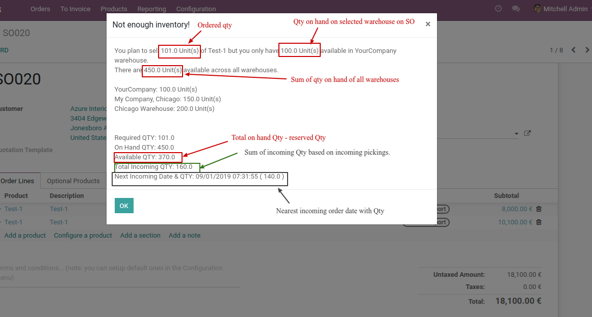

Sprintit SO Popup Modifications
More details added on warning popup for not enough inventory

Warning popup open based on Virtual QTY by Odoo standard but now warning popup open based on QTY on hand.
Required QTY: Ordered qty on sale order line.
On Hand QTY: Total available QTY in warehouses ( net onhand qty + reserved outgoing qty )
Available QTY: Net QTY available on warehouses ( On Hand QTY - reserved outgoing qty )
Total Incoming QTY: Sum of incoming QTY ( Total of product qty from incoming picking )
Next Incoming Date & QTY: Nearest Incoming picking date & Qty of product